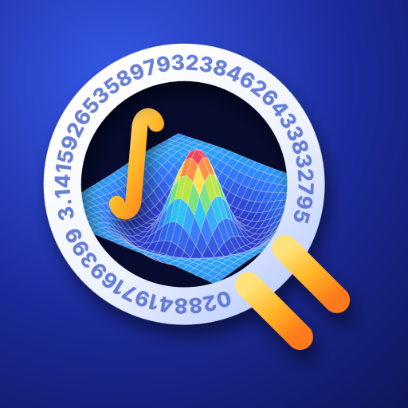

A multi-function calculator for Android: type an expression the way you would write it
QCalc is an Android app built on libqalculate, the calculation engine of the open-source calculator Qalculate!. You can type expressions such as 60 mph to km/h, solve(x^2 − 5x + 6 = 0) or integrate(x^2 sin(x), 0, pi). It handles unit conversion, currency conversion, equations, calculus, matrices, complex numbers, number bases, dates, uncertainty propagation, 2D and 3D graphs, and high-precision arithmetic with up to 200,000 digits. The app is in English and Japanese: it starts in English, and "Language / 言語" in the menu switches it to Japanese.
QCalc is not an official Qalculate! app; it is made by an individual developer who is not affiliated with the Qalculate! project.
QCalc is free software under the GNU General Public License, version 2 or later. The licenses of GMP, MPFR, libxml2 and the other software in the calculation engine are shown in the app under "About this app" → "Open source licenses".
式のまま計算できる、Android 用の多機能電卓
QCalc は、オープンソースの電卓「Qalculate!」の計算エンジン libqalculate を組み込んだ Android アプリです。60 mph to km/h、solve(x^2 − 5x + 6 = 0)、integrate(x^2 sin(x), 0, pi) のように、式をそのまま入力して計算できます。単位変換、通貨換算、方程式、微積分、行列、複素数、進数、日付、誤差の伝播、2D・3D グラフ、最大 20 万桁の高精度計算に対応しています。画面は英語と日本語です（最初は英語で表示され、メニューの「Language / 言語」で日本語に切り替えられます）。
QCalc は Qalculate! の公式アプリではなく、Qalculate! の開発者とは関係のない個人が作っています。
QCalc は GNU General Public License v2 以降のフリーソフトウェアです。計算エンジンに組み込んだ GMP・MPFR・libxml2 などのライセンスは、アプリの「このアプリについて」→「オープンソースライセンス」で確認できます（英語の画面では "About this app" → "Open source licenses"）。